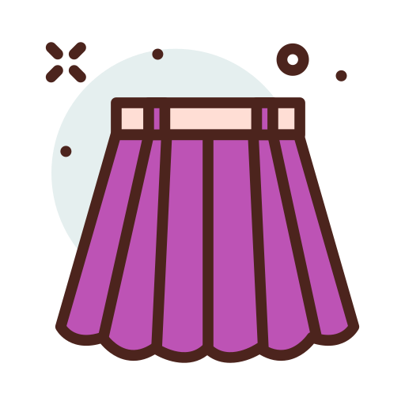
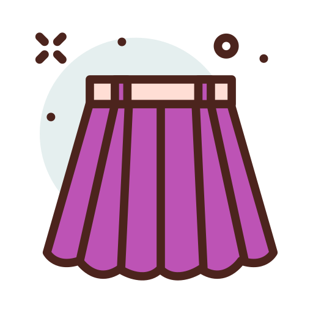

2021 유행하고 있는 디자인으로 베이직 무드의
셔츠를 준비했습니다.
와이드한 소매에 크롭 기장으로 모던하고 트렌디한
스타일링이 가능합니다.
크롭 기장으로 다리 라인이 더욱 길어 보이도록 연출해주며
하이웨이스트 팬츠 혹은 스커트와 함께 매치하기 좋습니다.
이번 코디는 데님 스커트로 코디해주었으며 자칫
어중간해 보일 수 있는 스커트 길이를 보완하고자
롱 삭스를 함께 매치했습니다.
요즘 많이 보이는 트렌디한 숄더백으로 무난하게
어느 스타일에도 다 잘 어울리는 디자인입니다.
이번 코디와 같이 캐주얼 룩 이외에도 클래식한 스타일에도
편하게 활용할 수 있답니다.
1. 포켓 포플린 셔츠
￦39,000
 2. 미디 데님 스커트
￦39,000
3. 리브드 롱 삭스
￦5,500
 4. PURPLE® 레더 숄더백
4. PURPLE® 레더 숄더백
￦169,000
5. 레이스업 백리스 스니커즈
￦39,000
￦39,000
 2. 미디 데님 스커트
￦39,000
3. 리브드 롱 삭스
￦5,500
￦169,000
5. 레이스업 백리스 스니커즈
￦39,000